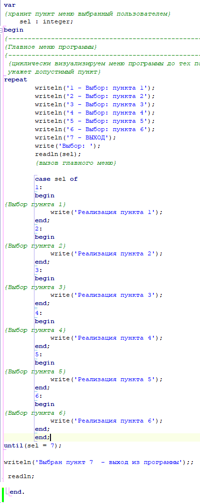

| Создание главного меню для программ. | ||
| Назад | ||
|
Пример построения типового меню для любой программы в C#. (для контрольной работы 7) static void Main(string[] args)
{
int no = 0;
bool op = false; //читать пункты меню
while (op==false)
{
Console.Write($"Введите код операции:\n Прочитать файл: 1\nДобавить логин - пароль: 2\nУдалить логин - пароль: 3" +
$"\nСохранить список в файл: 4\nВыйти: 9\n");
Console.Write($"Введите код операции:\n");
no = Convert.ToInt32(Console.ReadLine());
Console.WriteLine(no);
switch (no)
{
case 1:
Console.WriteLine("Выбрали Прочитать файл\n ");
break;
case 2:
Console.WriteLine("Выбрали Добавить логин - пароль\n");
break;
case 3:
Console.WriteLine("Выбрали Удалить логин - пароль\n");
break;
case 4:
Console.WriteLine("Выбрали Сохранить список в файл\n");
break;
case 9:
Console.WriteLine("Выбрали Выйти\n");
op = true;
break;
}
// Console.Clear(); //очистить экран
}
Console.WriteLine("Конец программы");
Console.ReadLine(); //stop
Организовать работу со списками удобно используя меню. Пример построения типового меню для любой программы.
Организовать работу со списками удобно используя меню. Пример построения типового меню для любой программы.
 |
||
| Конспект подготовлен Бакулиным А. М. 2022 год. | ||